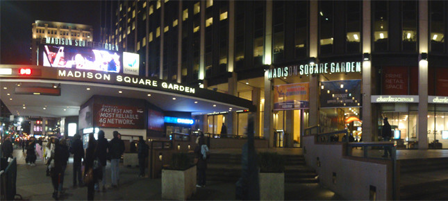
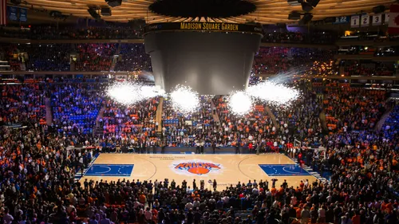
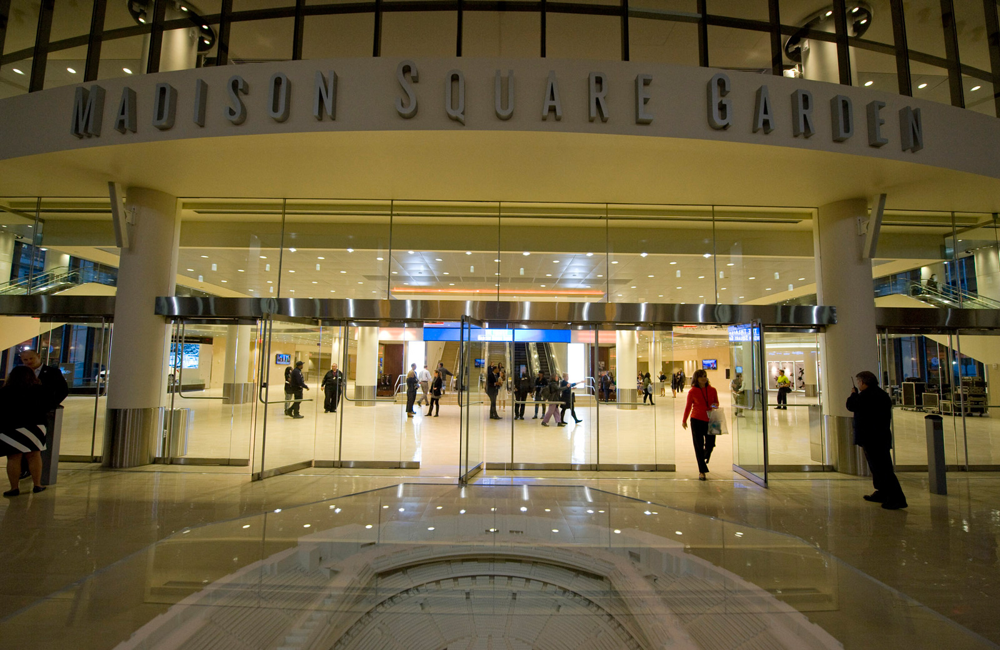
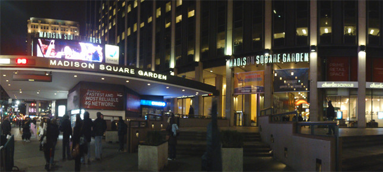
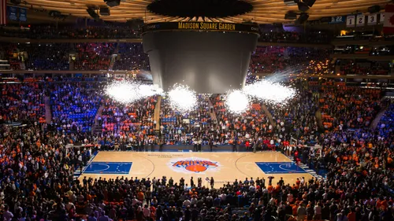
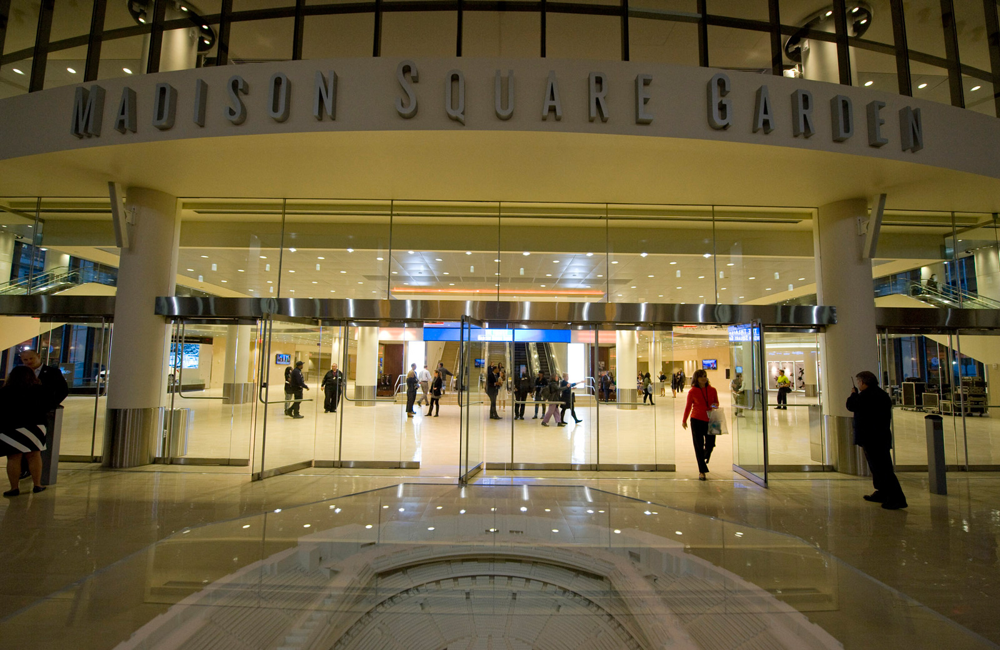

Madison Sqaure Garden, aka "The World's Most Famous Arena." Located in Midtown, Manhattan between Seventh and Eighth avenues from 31st to 33rd Street, it is home to the New York Knicks and New York Rangers.Originally called Madison Square Garden Center, the Garden opened on February 11, 1968, and is the oldest major sporting facility in the New York metropolitan area. It is the oldest arena in the NBA and the NHL. In 2016, MSG was the second-busiest music arena in the world in terms of ticket sales, behind The O2 Arena in London. Including two major renovations, its total construction cost is approximately $1.1 billion, and it has been ranked as one of the 10 most expensive stadium venues ever built. Some notable events held at MSG are the Stanley Cup Finals and NBA Finals. They were held simultaneously on two occasions: in 1972 and 1994. The Knicks clinched the 1970 NBA Finals at the arena in the seventh game, remembered best for Willis Reed's unexpected appearance after an injury. The Rangers would later end their 54-year championship drought by winning the 1994 Stanley Cup Finals on home ice. The Knicks, however, lost in 7 games to Hakeem Olajuwon and the Houston Rockets in Houston. Finally, the 1999 NBA Finals were decided in the Garden, with the San Antonio Spurs defeating the Knicks in five games.